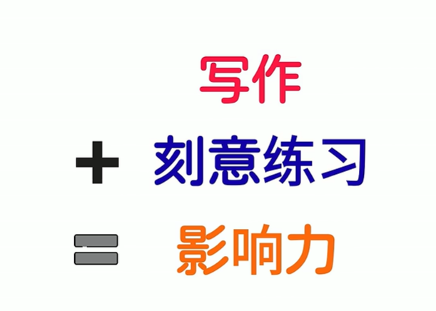
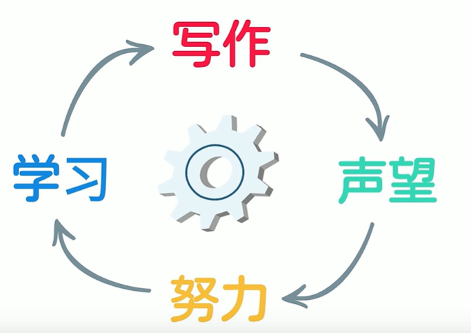
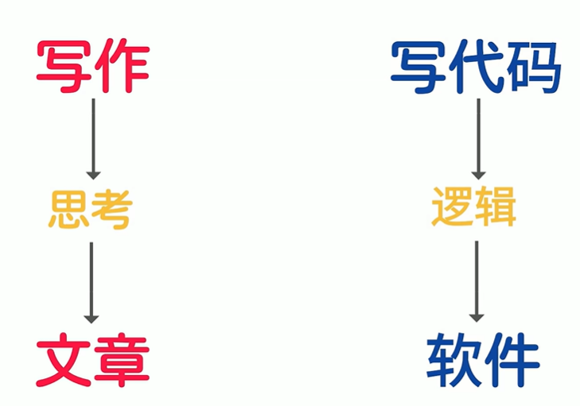
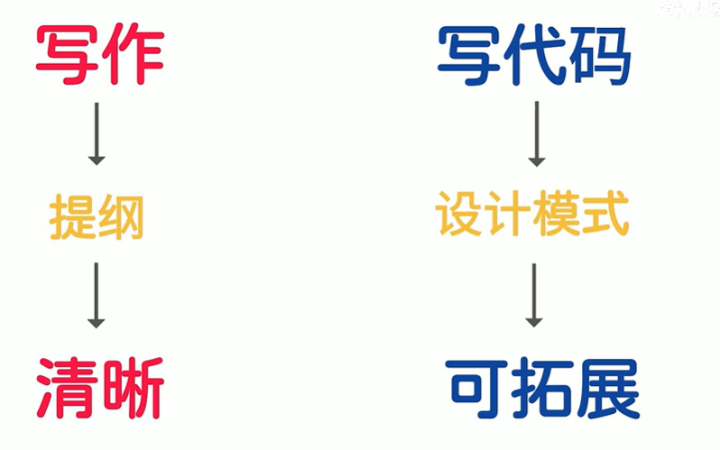

create my blog
本篇文章讲述搭建博客的原因、过程以及使用hexo的技巧
为什么搭建博客？
学习的步骤可以分为输入、处理、输出三步，每一步都很重要，如果你学完某些内容却没有输出任何东西，那么它带给你受益是微乎其微的，随着时间的流逝，趋近于0；而写博客是一个非常方便的输出方式，写作的过程和内容也能体现出一个人的思考以及体会，更能帮助其更深一步理解所学知识；
对于一名计算机类专业的学生，我们接受的输入本身就大得多（相较大部分专业）；输出的重要性不言而喻，我下了面从5点论述，为什么写作对于程序员非常重要。
写作=协作，良好的写作能力促进人与人之间的交流，让整个团队的知识成果以文档的形式沉淀下来，使得项目更好更久地运行下去以及拓展；在大公司中越是职位越高的人越能出口成章流畅输出观点，他们的影响力也越大
写作是学习的催化剂：写作不仅是向别人解释某个概念，它还能帮助我们更深入地思考问题，让思路更清晰；一旦养成写作的习惯，就会慢慢形成正循环。
温故而知新：写作需要大量的阅读的资料作为支撑，所以写作也会让你更精确，更注重细节和刨根问底，帮助你复盘学习过程，并揭示看似理解了实际上却并不理解的知识，当你意识到当前的某些知识是在模糊不稳定的基础之上时，你就会开始寻找缺失的部分，获得更深的理解；
写代码和写文章有很多共同之处，顶尖的工程师往往也是好的文章作者，他们的文章和代码一样有逻辑性、行文流畅、优雅且工整;
  博客是写文章的一种很好的载体，坚持下去，无论有多少人看，收益最大的人一定是自己；
搭建过程
- 使用hexo搭建博客；具体参考
关联github page的仓存到本地
安装hexo
配置主题
安装hexo-deployer-git插件实现自动远程部署：npm install hexo-deployer-git –save
然后修改 _config.yml 文件末尾的 Deployment 部分，修改成如下：
deploy: type: git repository: git@github.com:用户名/用户名.github.io.git branch: main关联域名： 打开github上博客仓库的设置: 重新设置Custom domain:[www.tolsz];并开启https;(github给的权益)
- 为什么github pages部署hexo之后每次hexo g -d后关联的域名都会失效,每次都要在github上手动设置吗;
- 参考链接：
- 不需要，只需要在github的该仓库中创建一个CNAME文件并将域名写入即可；等个1min就好了；但这样再下一次推送后CNAME文件又会失踪；原因如下
- 偶然中发现，刚开始还未部署hexo时本地仓库整个文件夹都和远程git仓库是关联同步的，包括CNAME和README.md都是同步的；但是部署hexo之后，远程仓库中只含有博客项目下的.deploy_git下的文件夹；每次更新使用hexo g 会根据本地内容（source中的文件）生成相应页面到pulic中， 然后hexo d进行部署时，会将public中的文件同步deploy_git下同时推送到远程的github仓库；即source下所有的文件内容对应public;比如source/A hexo -g之后就会在public/A 生成相应内容；
- 这也是为什么1中操作下CNAME文件会消失，因为public下没有CNAME文件，所以推送到远端时，自然也没有；解决办法就是在source文件夹下创建CNAME文件添加不含http前缀的域名，然后hexo g -d即可；
- 由于dns缓存的原因，每次更新并部署后需要过一会（20s-60s）才能看到新的内容，样式与本地的markdown看到的几乎一样；
- 为什么github pages部署hexo之后每次hexo g -d后关联的域名都会失效,每次都要在github上手动设置吗;
常用命令：
hexo new "name" # 新建文章 hexo new page "name" # 新建页面 hexo g # 生成页面 hexo d # 部署 hexo g -d # 生成页面并部署 hexo s # 本地预览 hexo clean # 每次更新前使用：清除缓存文件: 删除 public 文件夹、db.json 文件以及 _config.yml 中配置的 public_dir 目录下的所有文件。确保生成干净的网站文件: 清除缓存后，下次运行 hexo generate 命令时，会重新生成所有网站文件，避免旧文件的影响。这样会导致你直接在Public下对文件做的修改比如更换Img、html等等都会被撤销；因此，强调修改任何东西都是在source、配置文件下才是正确稳妥的； hexo help # 帮助基本操作
删除/删除页面：直接在本地source / _post 文件夹中删除/修改相应文件然后hexo clean; hexo g -d即可
图片操作：
- 插入图片时需要考虑其大小以及排版在此博客系统上的效果，一般使用html标签调整，设置width/height为百分比；eg:
1
2
3
4<center>
<img src="https://alexcld.com/images/pengyuyan.jpg" width="25%" height="25%" />
</center>
- 插入图片时需要考虑其大小以及排版在此博客系统上的效果，一般使用html标签调整，设置width/height为百分比；eg:
实际上，hexo渲染一篇post的工作流程是：
拿到一个markdown文件， 根据这个文件的layout类型， 进行样式排版，生成html文件， 最终展示到网页端。发布一篇博客的操作流程
- hexo new ‘title’
- hexo clean
- hexo g -d
hexo使用技巧
- 设置文章摘要和标签操作举例如下：
1
2
3
4
5
6
7
8
9
10
11
12
13
14---
title: hello hexo markdown
date:
tags:
- hello
---
我是短小精悍的文章摘要(๑•̀ㅂ•́) ✧
<!-- more -->
紧接着文章摘要的正文内容 - 资源引用：除了url的绝对引用外，相对引用可以使用 Hexo 提供的资源文件夹功能:使用文本编辑器打开站点根目录下的 _ config.yml 文件，将 post_asset_folder 值设置为 true。Hexo 将会在我们每一次通过 hexo new title 命令创建新文章时自动创建一个同名文件夹，于是我们便可以将文章中所引用的相关资源比如截图放到这个同名文件夹下，然后通过相对路径引用；不针对封面等与文章内容无关的资源；
- 强调一下hexo g时，只会将source目录下的img文件夹、_posts下的new出来的md文件以及资源引用开启后下的同名文件夹下的资源文件复制到public下，其他的文件不会复制到public下；因此直接复制图片粘贴到md中的资源图片，vscode会默认在当前目录下创建一个img/{title}文件夹用以存放截图，但是此文件夹不会被hexo g复制到public下，因此需要手动将其复制粘贴一份到资源引用功能开启后的同名（title）文件夹下，然后hexo g -d即可；
- 分类与标签：
- 二者区别：分类具有顺序性和层次性而标签没有顺序和层次；可忽略不计
- 在scaffolds/post.md设置默认的文章模板如下，生成之后再加入分类/标签即可，分类比较好用：
1
2
3
4
5
6
7
8---
title: {{ title }}
date: {{ date }}
tags:
- 标签
categories:
- 类别
---
- 自定制、美化博客
- 参考：
- 配置：包括所有图片、导航栏的title、标题等等都在_conflg.主题.yml中设置,其优先级最高,然后考虑_config.yml;
- 修改banner图：
- 在网上查找免费开源的风景图片并下载下来（避免版权纠纷）推荐几个免费开源的图片网站
- 不知为何在配置中修改默认banner_img的属性不生效，但是可以分步设置各个分页的banner图，参考
1
2
3
4
5
6
7
8
9
10
11
12
13
14
15
16
17
18# 首页
index:
banner_img: /img/banner.jpg # 首页 Banner 头图，以下相同
banner_img_height: 100 # 头图高度，屏幕百分比，available: 0 - 100
#---------------------------
# 文章頁
# Archive Page
#---------------------------
archive:
banner_img: /img/articles.jpg
banner_img_height: 80 # available: 0 - 100
#---------------------------
# 分類頁
# Categories Page
#---------------------------
category:
banner_img: /img/categories.jpg
banner_img_height: 80 # available: 0 - 100
- 设置文章在首页中的封面图：
- 设置模版scaffolds/post中添加index_img: /img/cover/
{{ title }}.png； - 在source/img下创建cover文件夹,将new的文章的封面移动到其中，并改为{title}.png
- hexo clean ;hexo g -d
- 设置模版scaffolds/post中添加index_img: /img/cover/
- 同理，banner_img: /img/cover/
{{ title }}.png设置文章的banner图